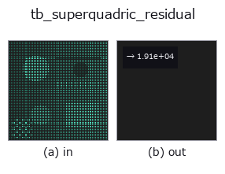

typed op• 数据种类:points → feature
• 调用:fullseye.apply(img, "tb_superquadric_residual", a=0.5, b=0.5)(2-D 的模型是一张图 + 两个标量旋钮 a,b∈[0,1])

*图为在 128×128 合成输入上实际运行的输出。左为输入，右为输出。点云以俯视散点显示(亮度 = z)，一维序列为折线，体数据为沿 z 的最大值投影，视频为中间帧，复数图像为幅值；无法成像的返回值直接显示数值。*
*旋钮 a 不改变输出(实测: 0.1 / 0.5 / 0.9 相同)。*
*旋钮 b 不改变输出(实测: 0.1 / 0.5 / 0.9 相同)。*
阶段(前置算子 → 本算子，从左到右):
▸ tb_superquadric_residual: 处理阶段 (文档网站)
Gross-Boult 体积修正残差：mean( (sqrt(a1 a2 a3)(F^eps1 - 1))^2 )。
用 inside_outside(points, a, eps, R, t) 求出各点的内外函数 F，将逐点残差 r_i = sqrt(a1*a2*a3) * (F_i**eps1 - 1) 的 2 次方均值以 float 返回。表面上的点 F=1，因此残差为 0，内侧为负、外侧为正的残差(因取 2 次方，符号消失)。与 fit_superquadric 所最小化的是同一个量，返回 dict 中的 residual 也是这个值。
• points：可 reshape 为 (N,3) 的点云(world 坐标)。
• a：半径 (a1,a2,a3)。eps：形状指数 (eps1,eps2)(计算 F 时两者都用，外层的 F**eps1 只用 eps1)。
• R/t：位姿(X_body = R.T @ (X - t))。None 时为单位旋转 / 原点。
数值保护：F 裁剪到 [0, 1e12]，a1*a2*a3 先抬高到 1e-12 以上再取 sqrt (以免退化参数产生 inf/NaN。对表面附近的值没有影响)。
量纲：sqrt(a1 a2 a3) 是长度的 3/2 次方，F^eps1 - 1 无量纲，因此返回值具有长度 3 次方的量纲，依赖于点云的尺度。不适合在大小不同的物体之间比较。它不是真正的点-表面欧氏距离而是径向距离近似，并且对离群值毫无防护，这些都如模块 docstring 所述。
桥接到 2-D 进化注册表的 3d op superquadric_residual。实现相同，只是调用约定改为 op(v, a, b)。此 op 没有可调参数，a 和 b 都不使用。
• 示例数据目录(下载 URL / 许可证) —— 2-D 用 skimage.data(BSD/公有领域)加合成图,3-D 给出真实数据源(Stanford/PDS 等)的下载 URL。
• 算子来历与参考文献 —— 该算子族所依据的研究/方法出处。
下面的程序已确认可以运行(与图相同的输入)。在 Studio 帮助中，此块会变成按钮，可当场加载并运行。
img_to_points 0.50 0.50 tb_superquadric_residual 0.50 0.50
下面的示例调用的是底层账本算子 superquadric_residual。此桥接算子只是把同一实现适配为 fn(v, a, b) 约定，行为完全相同(只是调用形式不同)。
• superquadric_fit — py -3.11 examples_3d/superquadric_fit.py
feature 作为输入)typed)tb_points_to_voxel · tb_estimate_point_normals · tb_iss_keypoints · tb_project_points · tb_render_point_depth · tb_statistical_outlier_removal · tb_radius_outlier_removal · tb_voxel_grid_downsample
*Provenance: ops.py — 2D 算子登记表。本条目由 tools/opdocs.py md 自动生成(请勿手工编辑)。*
© 2026 Kazufumi Furuse — Fullseye operator documentation. Licensed under Apache-2.0.